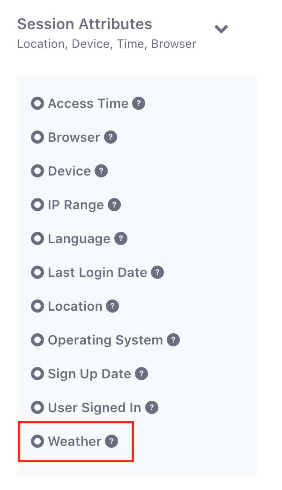
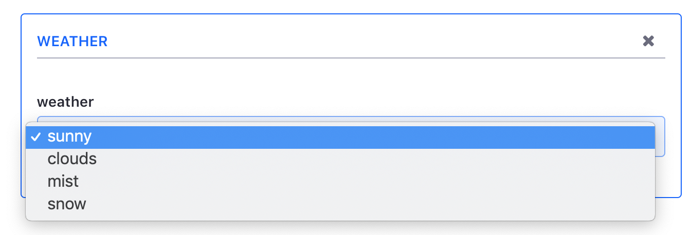

In the Audience Targeting application, a User Segment is defined as a group of users that match a set of rules. Out of the box, Liferay provides several types of rules that are based on characteristics such as age range, gender, location, and so on. Visit the Liferay Audience Targeting Rules article for information on each rule type and their configuration options. To extend the set of available rule types, you can create a class that implements the Rule interface and deploy the class in your own OSGi plugin.
This tutorial shows you how to create a custom rule type and deploy it in an OSGi plugin.
Adding a new type of rule to the Audience Targeting application is easy. There are three components you can specify for your rule:
The first thing you’ll define in your rule is its behavior. The behavior of your rule is controlled from a Java class file that you create.
Create a module for deploying a rule using your favorite third party tool. A Blade CLI contenttargetingrule template is available to help you get started quickly by setting all the default configuration for you, and it contains boilerplate code so you can skip the file creation steps and get started right away.
Create a unique package name in the module’s src directory, and create a new Java class in that package. To follow naming conventions, your class name should begin with the rule name you’re creating, and end with Rule (e.g., WeatherRule.java). Your Java class should implement the Rule interface.
Directly above the class’s declaration, insert the following code:
@Component(immediate = true, service = Rule.class)
This annotation declares the implementation class of the Component, and specifies to immediately start the module once deployed to @product@.
Before diving deeper into your -Rule class, it’s important to understand what is available for you to extend from this class. It is required to implement the Rule interface, but there are Rule extension classes you can extend from in your custom rule, which provide helpful utilities. For example, you can extend the BaseJSPRule class for support when generating your rule’s UI using JSPs.
Since Liferay 7.0, JSP is the preferred technology for Audience Targeting extension views. FreeMarker views, however, are still supported through their respective base classes (e.g., BaseFreemarkerRule). If you’re interested in using a technology besides JSP or FreeMarker to implement your UI, you can add a method getFormHTML to your -Rule class.
The getFormHTML is used to retrieve the HTML created by the technology you choose, and to return it as a string that is viewable from your rule’s form. If you plan, therefore, on using an alternative to JSP or FreeMarker, you must override this method by creating and modifying it in your -Rule class. This tutorial demonstrates implementing the UI using JSP, and assumes the Rule interface is implemented by extending the BaseJSPRule class.
Of course, you still need to make some additional changes to define how your rule works. Here are some of the methods that you can implement to modify your rule behavior:
evaluate(HttpServletRequest, RuleInstance, AnonymousUser): Returns true if the user complies with the rule instance in real time. The evaluation is completed correctly after the user makes a request.evaluate(Map, RuleInstance, AnonymousUser): Returns true if the user complies with the rule instance in an offline mode. The evaluation is completed without having a user request. This will only be called if the rule supports offline evaluation. A context map can be optionally passed with some context variables.exportData: Exports any additional data added by this rule when the rule instance is exported.getCacheTime: Returns the time in milliseconds that the evaluation of this rule can be cached. For example, an Age rule can be cached at least 1 day and a Geolocation rule could be cached 5 minutes. This value can be configurable by adding a custom configuration to your component. A value of 0 means that the evaluation can not be cached.getIcon: Returns the Font Awesome CSS class for the rule icon.getName: Returns the rule localized name.getRuleCategoryKey: Returns the key that identifies the category of the rule.getRuleKey: Returns the key that identifies the rule. The rule instances of this rule are identified by their rule key.importData: Imports any additional data added by this rule when the rule instance is imported.isInstantiable: Returns true if the rule can be used more than once with different values for a user segment.isVisible: Returns true if the rule is visible.processRule: Returns the result of evaluating the rule form fields in the context of the request and response.supportsOfflineEvaluation: Returns true if the rule can be evaluated offline (without the user request in real time). If this is set to true, the method evaluate(Map, RuleInstance, AnonymousUser) should be implemented.To show how easy it is to modify a rule’s behavior, you’ll make a quick change in your rule’s class. When extending the BaseJSPRule class, the category of the rule is not set, by default. To change your rule’s category (i.e., the category your rule selectable from in the Audience Targeting app), add the following:
@Override
public String getRuleCategoryKey() {
return SessionAttributesRuleCategory.KEY;
}
Now your rule’s category is set to Session Attributes. Available category classes include BehaviourRuleCategory, SessionAttributesRuleCategory, SocialRuleCategory, and UserAttributesRoleCategory.

Figure 1: This example Weather rule was modified to reside in the Session Attributes category.
Now that you’ve modified some basic features in your -Rule class, you’ll need to develop the UI for your rule’s configuration. As you read earlier, the second component of your rule is its UI configuration, which is used to show the rule’s form. If your -Rule class is already extending BaseJSPRule, your rule already supports using JSP pages.
To view a sample rule and its UI configuration, download the sample weather rule.
If you wanted, for example, to create user segment rules based on the type of weather a user is experiencing, you could create a drop-down menu that lets the administrator select a weather type to associate with that user segment rule. Here’s a code snippet from the weather rule’s JSP template (view.jsp) that could be applied to this example:
<%
Map<String, Object> context = (Map<String, Object>)request.getAttribute("context");
String weather = (String)context.get("weather");
%>
<aui:fieldset>
<aui:select name="weather" value="<%= weather %>">
<aui:option label="sunny" value="sunny" />
<aui:option label="clouds" value="clouds" />
<aui:option label="mist" value="mist" />
<aui:option label="snow" value="snow" />
</aui:select>
</aui:fieldset>
This JSP code creates a select drop-down box with the name weather. Then it specifies several options associated with different types of weather. You could borrow from this JSP code and change the name and labels for a select drop-down box and values appropriate for your rule plugin.

Figure 2: This example rule uses a select drop-down box.
Now you’ll jump back into modifying your rule’s behavior via the -Rule class. You’ll dive further into the sample weather rule and find what is necessary to make the JSP code work with the Rule Java class.
Find the processRule method in the WeatherRule class. This method is called when you click Save after selecting your rule in the Rules form. The portlet’s request and response, the rule instance’s ID, and the values from the form can be used by this method.
In some cases, you may need to retrieve info from the portlet’s request and response or the rule’s ID. This tutorial demonstrates using the values parameter. This parameter represents all the values on the form you’re saving.
If you wanted to process one of the form’s values, you could do that from the processRule method. You’ll need to return the string value for the selected entity you chose for your rule type. For example, recall the JSP code example you studied earlier. To retrieve the selected value from the select box, you’d need to retrieve the weather value:
@Override
public String processRule(
PortletRequest request, PortletResponse response, String id,
Map<String, String> values) {
return values.get("weather");
}
The return value is stored in the typeSettings of the rule instance. The typeSettings field is managed by the framework in the Rule Instance table.
The next method to inspect in the weather rule is the populateContext method. This method takes the value the user selected and injects it into the context map parameter. For example, the following populateContext method populates a weather context variable with the weather value of the values map parameter.
@Override
protected void populateContext(
RuleInstance ruleInstance, Map<String, Object> context,
Map<String, String> values) {
String weather = "sunny";
if (!values.isEmpty()) {
// Values from Request
weather = values.get("weather");
}
else if (ruleInstance != null) {
// Values from Database
weather = ruleInstance.getTypeSettings();
}
context.put("weather", weather);
}
In this example implementation, this method checks if the values are available from the request. If they’re not available, it checks for the values in the database. Then the context map is updated by assigning the string key to the object value.
Excellent! You’ve processed your rule and populated the rule’s context. The last step you’ll need to take is specifying what your rule should evaluate. The evaluation process determines whether a user matches the rule.
Find the evaluate method in the WeatherRule class. There is logic that obtains the runtime user’s value for what you plan to evaluate.
...
String userWeather = getUserWeather(anonymousUser);
You can look at this method’s code in the downloadable ZIP file for the sample weather rule.
The weather rule now must retrieve the value stored in the type settings by using the processRule method.
String weather = ruleInstance.getTypeSettings();
Now that the rule has both the user’s value and the rule’s value, it should check whether they match. If they match, return true; otherwise, return false.
if (Validator.equals(userWeather, weather)) {
return true;
}
return false;
Finally, deploy your rule plugin to the Liferay server. Your new rule is fully functional, and the UI you’ve defined is added to the Add/Edit User Segment form so that administrators can set a value for that specific user segment.
Excellent! You’ve inspected and deployed a fully functional rule.
Here are some things to consider as you implement and deploy rules:
If you deploy your rule into a production environment, you may want to consider adding your values to the cache (e.g., weather in different locations), since obtaining the same value on every request is very inefficient and could result in slowing down your portal.
As an alternative to storing complex information in the typeSettings field which is managed by the framework in the Rule Instance table, you may want to consider persisting to a database by using Service Builder, which is supported in the Rule plugins.
You can override the BaseJSPRule.deleteData method in your -Rule, so that it deletes any data associated with the rule that is currently being deleted.
If your rule handles data or references to data that can be staged (e.g., a reference to a page or web content article), you may need to override the BaseJSPRule.exportData and BaseJSPRule.importData methods, to manage the content properly.
You now know how to create a custom rule type for your Audience Targeting application.